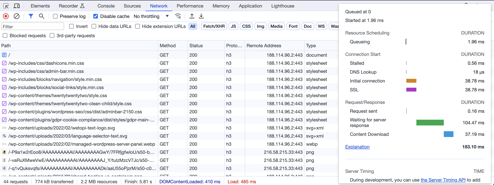

Casos A/B
Tria el millor per a WordPress
Joan Vega
- Full stack developer
- 2008 els primers WP
- 2015 hosting WP
Temes a tractar
- Seguretat
- Rendiment (Velocitat)
Ajudeu-me a triar:
Seguretat: tràfic no desitjat
2023: casi el 50% bots, 30% maliciosos.
Barracuda,
Statista,
Increditools,
Imperva
Seguretat: tràfic no desitjat

Amb quin tràfic us quedaríeu?
Necessitem protecció
... enfront el tràfic no desitjat
quina és més segura?
Necessitem protecció
- Actualitzacions
- Contrasenyes fortes
- Tallafocs extern WAF
- Bloqueig escriptura
Necessitem protecció
... si tenim poc tràfic,
ok a:
- Extensions tallafocs,
- limitadors de intents login
Rendiment (Velocitat)
Volem que la web vagi ràpid
Etapes (Velocitat)
- Servir la pàgina
dns, processar, latència xarxa, ... - Pintar pàgina
carregar recursos, aplicar estils, javascript, ...
Mesurar Velocitat al "Servir la pàgina"
(A) Amb les Developer tools
(B) No controlo les Dev tools
Quina es més lleugera?


Que puc fer: Ara! Ja!!!
- Extensions: les mínimes
o evita les que afectin pintat o escriguin a bbdd. - Tallafocs: fora de WP
- Redireccions: fora de WP
- Base de dades: motor Innodb
Si incremento la memòria de WordPress, anirà més ràpid?
// ... wp-config.php
define('WP_MEMORY_LIMIT', '512M');
...
(A) Si
en alguns casos
(B) No
I si escalo i assigno més Cores?
(A) Anirà mes ràpid.
(B) Probablement no.
Procurar sempre una bona base
- Un bon Hosting: TTFB<200 + HTTP/3 + Compressors
- Evita temes multiproposit i
constructors pesats
Ideal: "Temes de Blocks"
Tenim usuaris a Europa ...
Tenim usuaris a Europa ...
(A) CDN necessari
(B) CDN no necessari
... algun altre remei ?
- Cache
- Impossible millorar Hosting: afegir CDN
- Inspeciona a fons: Query Monitor, wp profile
Rendiment
Etapa: Pintar la página
Core Web Vitals


(A) Si
les he incorporat a la dieta
(B) No
no se per on començar
Bases per pintar la pàgina ràpid:
- Un bon hosting
- Un tema lleuger
- Poques extensions
- Imatge i vídeo lleugers i diferits
...algun detall més concret?
- Optimitza les imatges: webp, svg
sobretot element principal (LCP) - Atribut
fetchpriority="high"
per l'element principal (LCP) - Imatges amb les seves mides
per evitar salts (CLS) - Javascript: el mínim
i diferit:<script defer... (INP) - Lazy loading per imatges i vídeos
moltes gràcies :)
- Presentació
github: sitamet/casos-ab-tria-el-millor-per-wordpress/ - Vota A/B: un experiment
github: sitamet/vote-ab i sitamet/vote-ab-server - Gràcies reveal.js
github: hakimel/reveal.js
Quan passen coses...

Qualsevol petit canvi
pot fer caure la web.
En aquest cas un canvi de config.
Però fins i tot sense fer res per part nostre,
WordPress i el seu contingut canvia.
No funciona: ranking causes
- Actualització (automàtica) provoca conflicte.
- Base de dades
(timeouts, errors) - Certificat https no renovat.
- Esgotat algun límit de recursos.
- Dependència externa falla.
No funciona
No funciona: que faig?


No se que passa!
L'espai ocupat en disc creix
sense que jo faci res!!
Sense fer res?
(A) Estrany
(B) Normal
L'espai en disc creix ... per:
- caché.
- sessions (carrets compra, registres, spam, bots, ...)
- backups locals.
- base de dades.
- extensió escriu a base de dades.